Cassette
Inserta la cinta virtual y observa las bobinas.
REPRODUCTOR MUSICAL RETRO
Pulsa PLAY, mira girar las bobinas o vuelve a recorrer el dial. Tu colección digital recupera el gesto de escuchar.
Explorar las funciones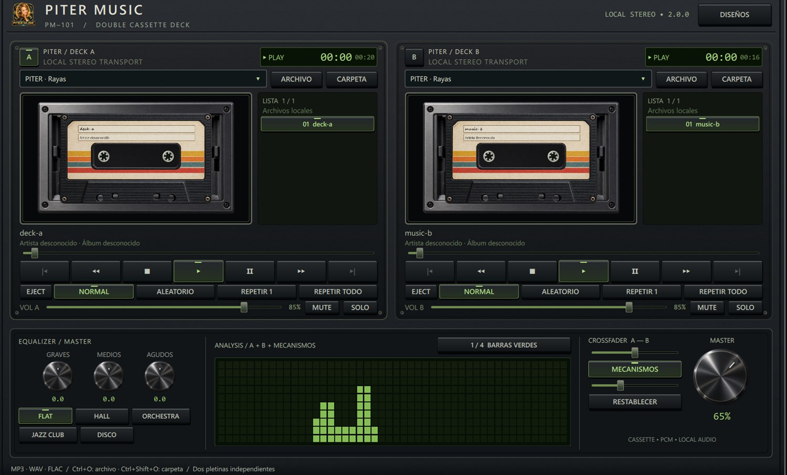

IDENTIDAD PITER MUSIC
El emblema original del proyecto, ahora en gran formato. La imagen reúne el personaje, los auriculares y la energía sonora de PITER MUSIC.
EL REPRODUCTOR
Abre tus archivos o una carpeta, elige un equipo y dale al PLAY. PITER MUSIC recrea los controles, pantallas y mecanismos de los equipos clásicos alrededor de tu música digital.
Inserta la cinta virtual y observa las bobinas.
Elige una pista y sigue el tiempo en pantalla.
Mira girar el plato del Sony LBT-V902.
Sintoniza emisoras por Internet en equipos compatibles.
SKINS · WINDOWS
De la doble pletina PITER a los ecualizadores de PiterAnt. Cada equipo cambia la forma de manejar tu colección.
Doble pletina, controles de transporte y medidores.
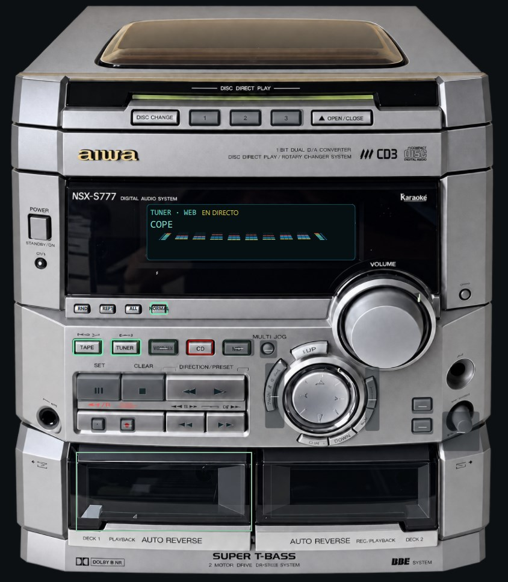
Cassette, CD local y sintonizador de radio.
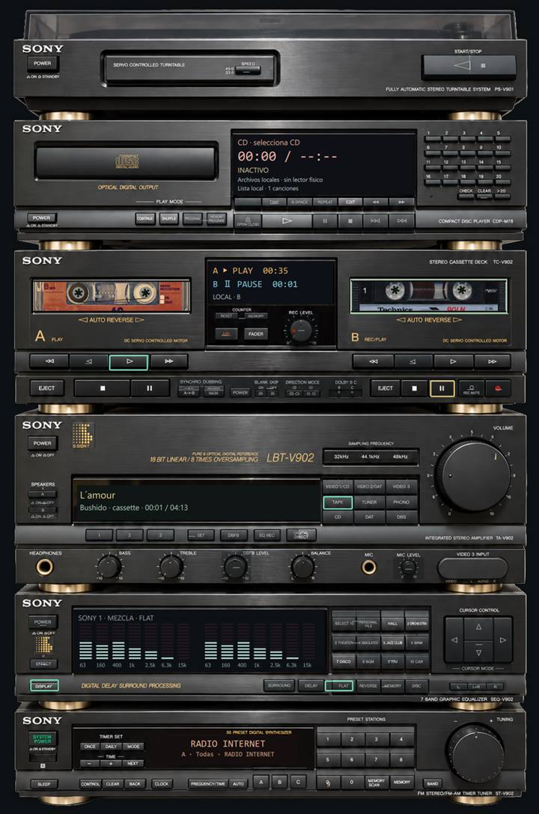
Equipo modular con cassette, CD, vinilo y radio.
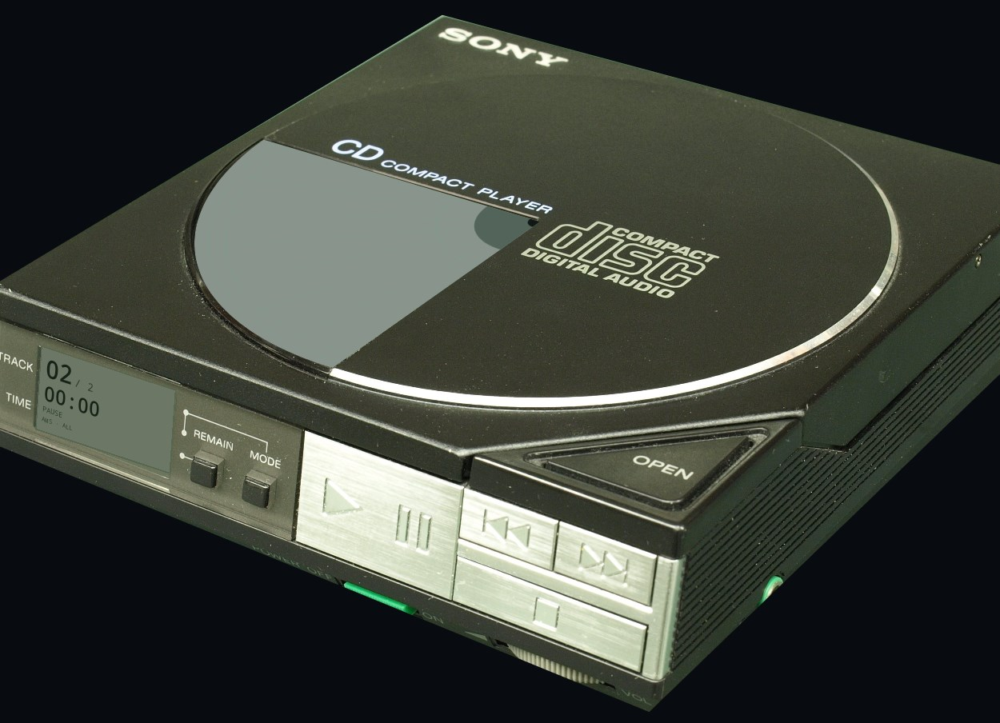
El CD portátil y su pantalla LCD.
Fotografía y licencia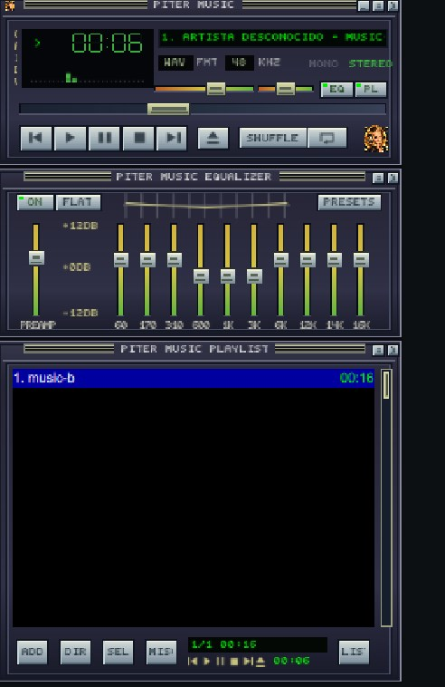
Transporte compacto, lista local y ecualizador.
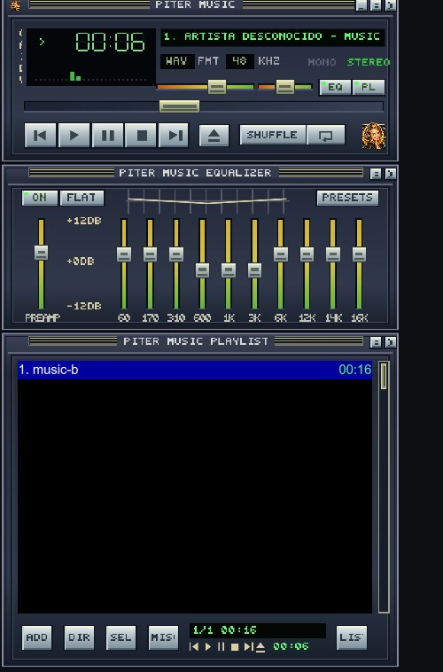
Controles digitales, presets y análisis en pantalla.
CASSETTES
Recorre las carcasas del reproductor y dale al PLAY para ver girar las bobinas en la pletina original. Escucha la pista de muestra o un archivo tuyo.
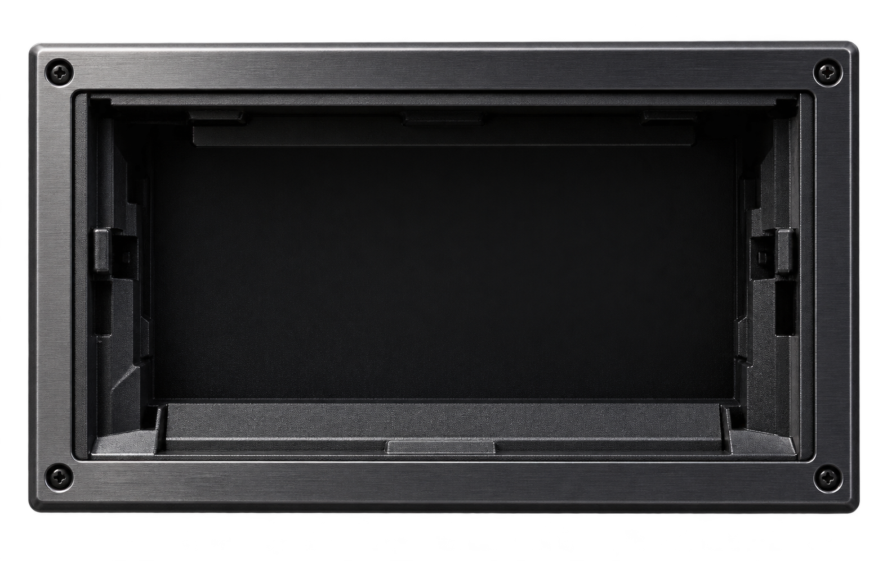
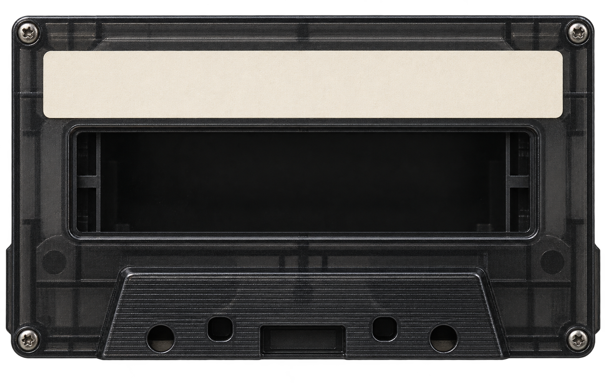
DEMO INTERACTIVA
La demo usa los formatos que admite tu navegador. Tu archivo se reproduce en tu dispositivo.
Muestra · Primer viaje
FUNCIONES
Organiza tu escucha y ajusta el sonido con el ecualizador. Los controles cambian según la edición y el equipo elegido.
Archivos y carpetas locales, listas, orden aleatorio y repetición de canción o carpeta.
Ajusta bandas o presets y sigue la señal en los medidores y analizadores.
Inserción, expulsión, sonidos de transporte, bobinas y cabezales animados.
Reproduce tu música local con controles de CD o, en el Sony LBT-V902, de tocadiscos.
Windows R2 añade un catálogo español en AIWA y Sony. Las emisoras dependen de cada cadena. Algunas señales requieren FFmpeg.
Pantalla completa en Windows y reproducción local de MP3, WAV y FLAC. Android incluye integración multimedia para Android Auto. Queda pendiente verificar esta versión en un vehículo compatible.
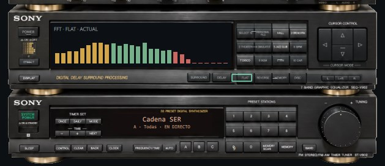
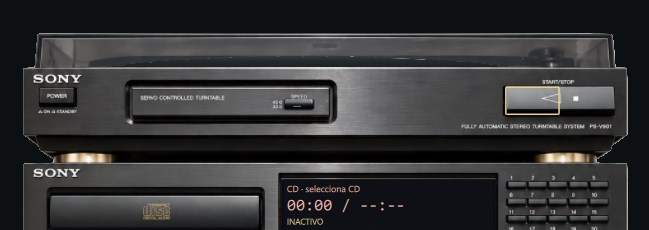
DESCARGAS
Dos ediciones para disfrutar de PITER MUSIC, sin crear una cuenta.
Vista previa local. Los archivos se sirven desde este equipo.
WINDOWS · 2.0.0 R2 RADIO
Portable para Windows x64. Extrae el ZIP completo y abre PiterMusic.exe dentro de la carpeta. Arranca sin instalación.
PITER MUSIC 2.0.0 para Windows Guía de inicio ↗ANDROID · 2.0.5
Al instalar un APK fuera de Google Play, Android puede mostrar avisos de seguridad.
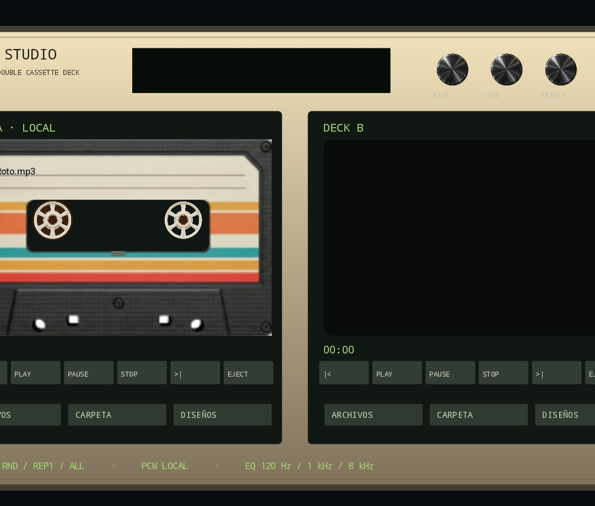
Contadores pendientes de la publicación de ambos archivos en GitHub Releases.
PRÓXIMAMENTE
Una próxima aplicación de Piter Apps.
COMENTARIOS
Comparte qué equipo te gusta más o qué detalle te gustaría ver en PITER MUSIC.
Si te gusta PITER MUSIC y quieres apoyar su desarrollo, puedes colaborar mediante PayPal.
brigadiespiter@hotmail.com


Comentarios publicados
El foro aún no está activo. No se almacenan comentarios hasta completar la configuración externa.